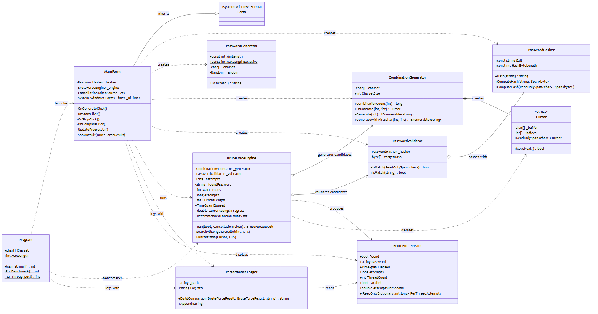
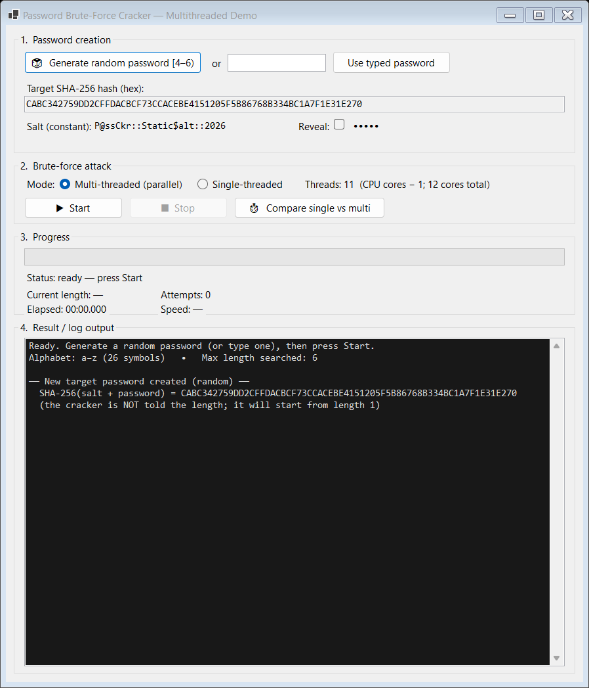
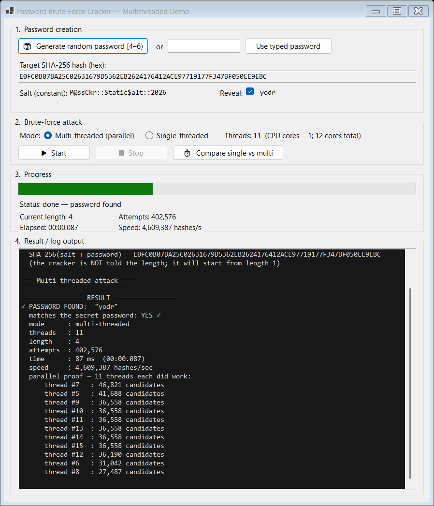
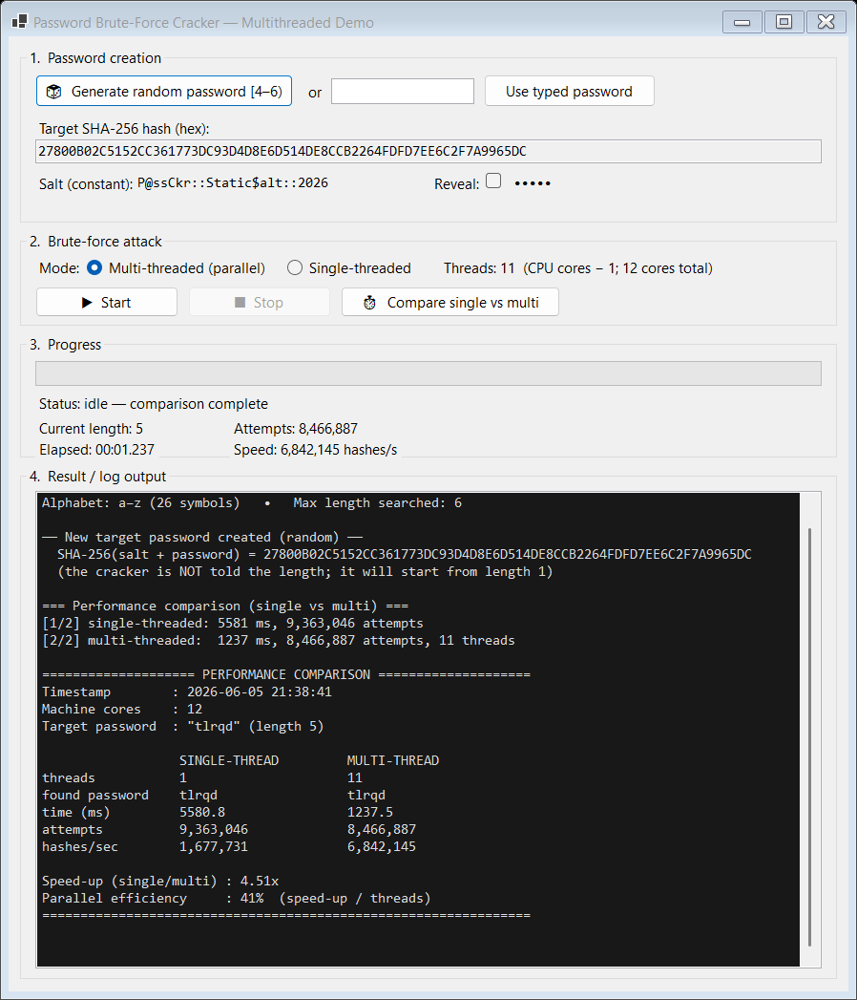

The goal of this assignment is to build a desktop application that brute-forces a password which has been hashed with SHA-256 and a constant static salt. The application generates a secret password of random length, then recovers it by trying every possible character combination, starting from length 1, using a multi-threaded algorithm limited to (CPU cores − 1) worker threads. The work is performed in parallel, all threads stop the instant the password is found, and the program logs the performance difference between single-threaded and multi-threaded execution.
Each major piece of functionality is implemented as its own class in its own file. The diagram below shows the classes, their key members and their relationships. The engine is the orchestrator; it depends on a generator and a validator that are intentionally independent of each other.

| Class (file) | Responsibility |
|---|---|
PasswordHasher | SHA-256 hashing of salt + password using a constant static salt. |
PasswordGenerator | Creates the secret password with a random length in the range [4, 6). |
CombinationGenerator | Brute-force generator: produces every combination of a given length (with an allocation-free Cursor). |
PasswordValidator | Brute-force validator: hashes a candidate and compares it to the target — independent of the generator. |
BruteForceEngine | Drives the search single- or multi-threaded; manages threads, progress, cancellation. |
BruteForceResult | Immutable summary of a run (found password, time, attempts, threads, per-thread work). |
PerformanceLogger | Builds and writes the single-vs-multi performance comparison. |
MainForm | The Windows Forms GUI (password creation, start/stop, progress, result). |
Program | Entry point; launches the GUI or the headless self-test / benchmark modes. |
The table maps every requirement from the brief to the code that satisfies it, followed by notes on each.
| # | Requirement | Status | Implementation |
|---|---|---|---|
| 1 | UML class diagram | Done | Section 2 / docs/UML_ClassDiagram.png |
| 2 | GUI: creation, start/stop, progress, time, result | Done | MainForm.cs |
| 3 | Each feature in a separate class & file | Done | 9 classes, 9 files |
| 4a | SHA-256 with constant static salt | Done | PasswordHasher.Salt |
| 4b | Random password length [4, 6) | Done | PasswordGenerator.Generate() |
| 4c | Search length 1→6, blind to real length | Done | engine length loop + generator |
| 4d | Multi-threading (Task based) | Done | BruteForceEngine (TPL + Barrier) |
| 4e | Maximum (CPU cores − 1) threads | Done | RecommendedThreadCount |
| 4f | GUI: start/stop, progress, time, found password | Done | MainForm.cs |
| 5 | Parallel (not sequential) execution | Done | per-thread work breakdown proves it |
| 6 | Stop all threads immediately when found | Done | shared CancellationTokenSource |
| 7 | Generator & validator separate/independent | Done | two classes, no coupling |
| 8 | Log single vs multi performance | Done | PerformanceLogger + log file |
PasswordHasher holds a compile-time constant salt
(P@ssCkr::Static$alt::2026) and hashes the bytes of salt + password. The same salt
is used everywhere, so a given password always maps to the same digest. The hot path writes the digest into a
stack buffer (no per-candidate allocation) and is thread-safe.
PasswordGenerator.Generate() uses Random.Next(4, 6), producing a length of exactly
4 or 5, and fills it with characters from the cracker's alphabet (a–z) so the password is
always reachable by the search.
The generator (CombinationGenerator) only enumerates candidate strings; it knows
nothing about the target. The validator (PasswordValidator) only hashes a candidate
and compares it to the target; it knows nothing about how candidates are produced. The engine begins at length 1
and increases the length only after a length is exhausted, so it never uses prior knowledge of the real length.
max(1, Environment.ProcessorCount − 1) long-running
worker threads — 11 on the 12-core test machine.id
sweeps first characters {id, id+W, id+2W, …}, so all workers run at the same time on disjoint slices.
The result records how many candidates each thread processed — concrete proof of parallel work (see Figure 3).CancellationTokenSource; every other worker observes the cancellation and stops immediately.
PerformanceLogger.BuildComparison() formats a side-by-side report (time, attempts, hash-rate, speed-up
and parallel efficiency) and appends it to performance_log.txt next to the executable. The same
comparison is shown in the GUI's result area.
The GUI is divided into four numbered sections matching the workflow: create a password, run the attack, watch progress, read the result.


yodr was recovered in 87 ms
after 402,576 attempts. The “parallel proof” list shows all 11 worker threads each processed tens of thousands of
candidates — the search really did run in parallel.
tlrqd:
5,581 ms single-threaded vs 1,238 ms multi-threaded — a 4.51× speed-up.The engine reuses one fixed pool of (cores − 1) threads for the whole run and marches the threads
through the lengths together with a Barrier:
for length = 1 .. 6: // start at 1, grow; blind to the real length
all workers synchronise (Barrier)
worker id sweeps first chars { id, id+W, id+2W, ... } // disjoint, parallel
for each candidate:
if validator.IsMatch(candidate):
record password (atomic) and Cancel() the shared token // stop everyone
Partitioning by first character means the slices never overlap, so no two threads test the same candidate and no
locking is needed on the search itself. A shared 64-bit counter (updated with Interlocked) and a stopwatch
feed the live progress bar, attempt counter, hash-rate and elapsed-time display, which a Windows Forms timer polls
every 100 ms while the background search runs.
> dotnet build PasswordBruteForcer.sln -c Debug
Build succeeded.
0 Warning(s)
0 Error(s)--benchmark)This mode generates a random password, hashes it, then cracks it single- and multi-threaded and verifies the recovered password equals the original.
=== Password Brute-Forcer — headless benchmark ===
CPU cores : 12
Worker threads : 11 (cores - 1)
Salt (constant) : P@ssCkr::Static$alt::2026
Secret password : sjdyn (length 5)
Target SHA-256 : ...
Running SINGLE-threaded brute force...
found = sjdyn time = 4808 ms attempts = 8,861,672
Running MULTI-threaded brute force...
found = sjdyn time = 1279 ms attempts = 8,341,573 threads = 11
threads that did work = 11
SELF-TEST PASSED--throughput)To measure pure scaling independent of where the password happens to sit, this mode hashes the entire length 1–5 keyspace (12,356,630 candidates) with no early exit.
=== Raw throughput (full length 1..5 sweep, no early exit) ===
Keyspace swept : 12,356,630 candidates
Single-threaded sweep: 5536 ms 2,231,972 hashes/sec
Multi-threaded sweep: 1595 ms 7,748,585 hashes/sec (11 threads)
Throughput speed-up : 3.47x (efficiency 32%)
Keyspace coverage : single=12,356,630, multi=12,356,630, expected=12,356,630 -> EXACTThe “EXACT” line confirms the generator visits every candidate once — no duplicates and none missed.
| Password | Length | Single-thread | Multi-thread (11) | Speed-up |
|---|---|---|---|---|
hnzg | 4 | 116 ms | 32 ms | 3.6× |
trxn | 4 | 270 ms | 67 ms | 4.0× |
qytjz | 5 | 3,744 ms | 1,407 ms | 2.7× |
sjdyn | 5 | 4,808 ms | 1,279 ms | 3.8× |
tlrqd | 5 | 5,581 ms | 1,238 ms | 4.5× |
The multi-threaded engine is faster than the single-threaded baseline in every run. The measured speed-up (≈ 2.7–4.5× crack-time, ≈ 3.5× fixed-work throughput) is meaningful but sub-linear with respect to 11 threads. This is expected, for three reasons:
The requirement of the brief — that multi-threaded execution is demonstrably faster than single-threaded, with the difference logged — is satisfied, and the per-thread breakdown demonstrates that the threads truly ran in parallel.
| Challenge | Resolution |
|---|---|
| The first design created fresh worker threads for each length, which reported 44 “threads” and wasted time creating threads for the tiny early lengths. | Re-architected to a single fixed pool of (cores − 1) threads that march through all lengths in lockstep using a
Barrier; now exactly 11 threads do work. |
| Stopping all threads the instant the password is found, without leaving a worker blocked at the barrier. | A shared CancellationTokenSource is cancelled by the finder; barrier waits are cancellation-aware so
blocked workers wake up and exit cleanly. |
| Counting attempts from 11 threads without serialising on one counter every hash. | Each thread keeps a local count and flushes it into the shared Interlocked total in batches. |
| Keeping the UI responsive during a multi-second search. | The search runs on a background Task; a Forms Timer polls the engine's live counters and
updates the progress bar, attempts, hash-rate and elapsed time. |
| Sub-linear scaling looked disappointing at first. | Added a fixed-work throughput mode to measure pure scaling and identified the real limiters (native SHA-256 cost, turbo clock, early-exit luck) — documented in Section 7. |
# Prerequisites: Windows + .NET SDK 10 (or Visual Studio 2022/2026)
dotnet build PasswordBruteForcer.sln -c Debug # build
dotnet run --project PasswordBruteForcer # launch the GUI
# or run the compiled executable directly:
PasswordBruteForcer\bin\Debug\net10.0-windows\PasswordBruteForcer.exe
# headless verification / measurements:
PasswordBruteForcer.exe --benchmark # crack a random password, log single vs multi
PasswordBruteForcer.exe --throughput # fixed-work scaling testThe application meets every requirement in the brief: a salted SHA-256 target password of random length is generated and recovered by an independent generator/validator pair, driven by a multi-threaded engine capped at (CPU cores − 1) threads that searches from length 1 upward, runs genuinely in parallel, stops all threads the moment the password is found, and logs the single-vs-multi performance difference. The Windows Forms GUI exposes password creation, start/stop, live progress, elapsed time and the recovered password, and the full source is published with a per-task commit history on GitHub.